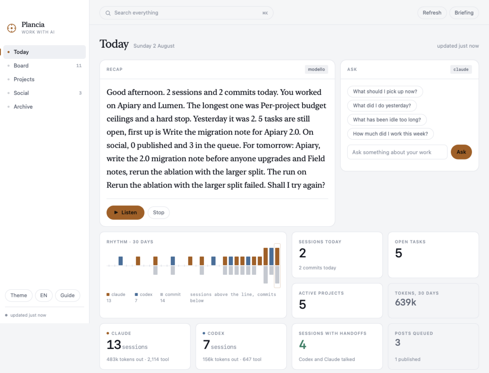
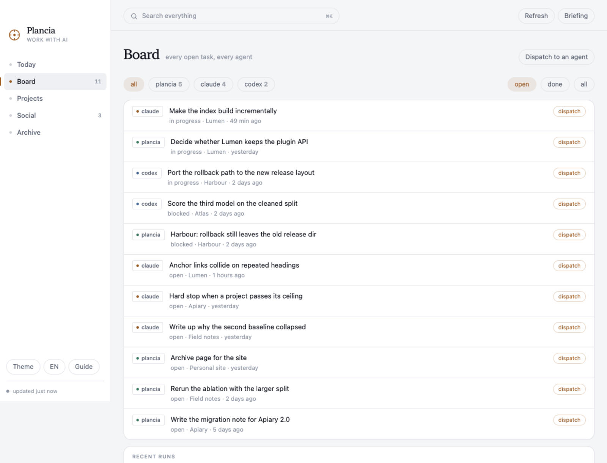
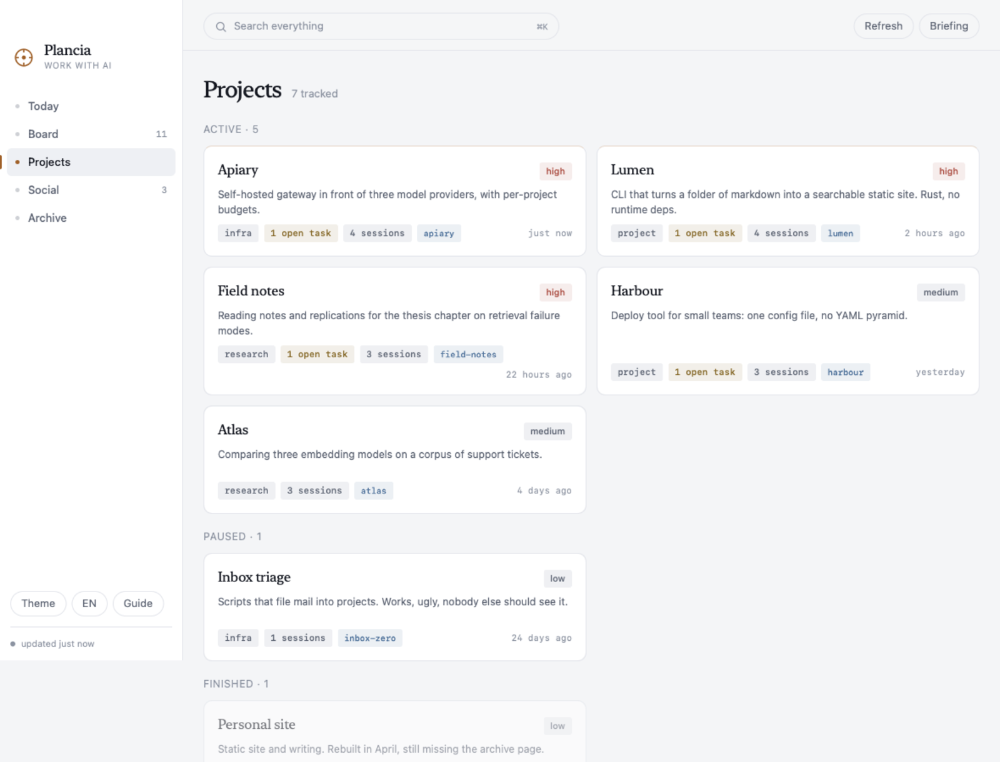

Two agents, four terminals,
one board.
Due agenti, quattro terminali,
una lavagna sola.
Claude Code and Codex already write down everything they do, transcripts and task lists and goals and memory, in files on your disk. Nothing reads them together. Plancia does: every open task on one board, a spoken recap of the day that ends with what is worth doing next, and one place to send the work back.
Claude Code e Codex si scrivono già tutto, transcript e liste di task e obiettivi e memoria, in file sul tuo disco. Solo che non li legge nessuno insieme. Plancia sì: tutti i task aperti su una lavagna sola, un riepilogo parlato della giornata che finisce con la cosa che conviene fare, e un posto solo da cui rimandare il lavoro.
Python 3 and macOS 13+. No dependencies to install, no account, no server.
The whole archive is one file: ~/.plancia/plancia.db.
Python 3 e macOS 13+. Nessuna dipendenza da installare, nessun account,
nessun server. L'archivio è un file solo: ~/.plancia/plancia.db.
bytes sent anywhere
byte spediti da qualche parte
agents read: Claude Code and Codex
agenti letti: Claude Code e Codex
file holds everything, in plain SQLite
file tiene tutto, in SQLite leggibile
tools your agents can call back into it
strumenti con cui gli agenti ci rientrano

the problem
il problema
The work is there. It is just scattered.
Il lavoro c'è. È solo sparpagliato.
Claude Code keeps its task list in one folder. Codex keeps its goals in a different database. Your own notes are somewhere else again. None of the three knows the other two exist, so at any moment you are the only integration layer, and the only one who remembers what was left half done on Thursday.
Claude Code tiene la sua lista di task in una cartella. Codex tiene i suoi obiettivi in un altro database. I tuoi appunti stanno da un'altra parte ancora. Nessuno dei tre sa degli altri due, quindi l'unico punto di integrazione sei tu, e sei anche l'unico che si ricorda cosa era rimasto a metà giovedì.
the board
la lavagna
Every open task, whoever opened it
Tutti i task aperti, chiunque li abbia aperti
- 01Three sources, one list
Claude Code's task lists, Codex's goals, and Plancia's own tasks, normalised to the same five states and sorted by what actually needs you.
- 01Tre fonti, una lista
Le liste di Claude Code, gli obiettivi di Codex e i task di Plancia, riportati agli stessi cinque stati e ordinati per quello che ti serve davvero.
- 02Write how you want it done, then dispatch
From any row: a prompt, a project, an agent. Plancia runs it in the right folder and tells you how it went.
- 02Scrivi come lo vuoi fatto, e mandalo
Da ogni riga: un prompt, un progetto, un agente. Plancia lo lancia nella cartella giusta e ti dice com'è andata.
- 03Plan only, unless you say otherwise
The default mode reads and reports without touching a file. Letting an agent modify your code is a separate choice you make every time.
- 03Guarda e propone, se non dici altro
Il modo predefinito legge e riferisce senza toccare un file. Lasciargli modificare il codice è una scelta a parte, che fai ogni volta.

the recap
il riepilogo
A recap that ends with a decision
Un riepilogo che finisce con una decisione
- 01Told, not listed
Your day in a paragraph, in your language, out loud if you want. Italian, English, Spanish, French, German, Portuguese.
- 01Raccontato, non elencato
La giornata in un paragrafo, nella tua lingua, a voce se vuoi. Italiano, inglese, spagnolo, francese, tedesco, portoghese.
- 02Proposals come from signals, never from a hunch
A failed run, a Codex goal out of quota, seven files uncommitted since yesterday, an approved post that never went out. No signal, no proposal.
- 02Le proposte nascono dai segnali, mai da un'intuizione
Un lancio fallito, un obiettivo di Codex senza quota, sette file non committati da ieri, un post approvato e mai uscito. Se il segnale non c'è, la proposta non c'è.
- 03Say "do it"
⌥Space from any app opens the voice panel. It listens continuously and works out from the silence when you are done. Questions about your own data answer in a tenth of a second, with no model involved.
- 03Dì "fallo"
⌥Spazio da qualsiasi app apre il pannello vocale. Ascolta di continuo e capisce dal silenzio quando hai finito. Le domande sui tuoi dati rispondono in un decimo di secondo, senza chiamare nessun modello.

your data
i tuoi dati
Everything it knows, and where it read it
Tutto quello che sa, e dove l'ha letto
Plancia has no server, no account and no telemetry. It reads files you already have and writes one SQLite database you can open with any tool. This is the whole list, and since the source is public you can check it rather than believe it.
Plancia non ha un server, non ha un account e non manda telemetria. Legge file che hai già e scrive un database SQLite che puoi aprire con qualsiasi strumento. Questa è la lista intera, e siccome il sorgente è pubblico puoi controllarla invece di crederci.
| reads | what it takes | writes |
|---|---|---|
| legge | cosa ne prende | scrive |
| ~/.claude/projects/ | session titles, counts, tokens, tools used | never |
| ~/.claude/projects/ | titoli delle sessioni, conteggi, token, strumenti usati | mai |
| ~/.claude/tasks/ | open task lists | never |
| ~/.claude/tasks/ | le liste di task aperte | mai |
| ~/.codex/sessions/ | Codex sessions and goals, the same way | never |
| ~/.codex/sessions/ | sessioni e obiettivi di Codex, allo stesso modo | mai |
| your git repos | commit subjects, branch, how many files are dirty | never |
| i tuoi repo git | oggetto dei commit, ramo, quanti file sono da committare | mai |
| ~/.plancia/plancia.db | the archive it builds from all of the above | yes, only here |
| ~/.plancia/plancia.db | l'archivio che costruisce con tutto il resto | sì, solo qui |
| ~/.plancia/eventi.jsonl | an append-only log other tools can subscribe to | yes, only here |
| ~/.plancia/eventi.jsonl | un registro in append a cui altri strumenti si possono agganciare | sì, solo qui |
The one thing that does leave: when you ask for a written recap or send work to an
agent, that runs your own claude or codex command line, with your
own subscription. Plancia never holds an API key.
L'unica cosa che esce: quando chiedi un riepilogo scritto o mandi un lavoro a un
agente, gira la tua riga di comando claude o codex, con il tuo
abbonamento. Plancia non tiene nessuna chiave API.
price
prezzo
Free if you build it. Pay if you want it built.
Gratis se te lo compili. A pagamento se lo vuoi già pronto.
The source is the whole program, under the GPL, forever. What costs money is the part that costs me: a signed and notarised build that opens with a double click, and the work of keeping it alive.
Il sorgente è tutto il programma, sotto GPL, per sempre. Quello che costa è la parte che costa a me: una build firmata e notarizzata che si apre con un doppio clic, e il lavoro di tenerla viva.
From source
Dal sorgente
Two commands. Same program, no asterisks.
Due comandi. Lo stesso programma, senza asterischi.
- Every feature, no time limit
- Tutte le funzioni, senza scadenza
- You compile the Mac app yourself with
mac/build.sh - L'app Mac te la compili con
mac/build.sh - macOS will ask you to allow it the first time
- macOS ti chiederà di autorizzarla la prima volta
Signed build
Build firmata
One payment. No subscription, no account, no licence server.
Un pagamento solo. Nessun abbonamento, nessun account, nessun server di licenze.
- Opens with a double click, signed and notarised by Apple
- Si apre con un doppio clic, firmata e notarizzata da Apple
- Updates in place, for this major version
- Si aggiorna da sola, per questa versione maggiore
- It pays for the certificate, and for the next feature
- Paga il certificato, e la prossima funzione
questions
domande
The obvious ones
Quelle ovvie
If it is open source, why would I pay?Se è open source, perché dovrei pagare?
You would not, if you are happy compiling it. That path stays complete and free, and this is not a crippled build: the paid one is the same code. What you buy is the signing certificate Apple charges me for every year, the notarisation, and the fact that someone keeps fixing it. Ardour and Krita have worked this way for years.
Non pagheresti, se sei contento di compilartelo. Quella strada resta completa e gratis, e non è una versione mutilata: quella a pagamento è lo stesso codice. Quello che compri è il certificato di firma che Apple mi fa pagare ogni anno, la notarizzazione, e il fatto che qualcuno continui a sistemarlo. Ardour e Krita funzionano così da anni.
Does anything I write ever leave my machine?Esce mai qualcosa che scrivo dalla mia macchina?
Not through Plancia. It has no network client of its own beyond an optional GitHub
call for your public repo list, which you can leave off. When you ask for a written recap
it runs the claude command you already have, so that text goes wherever your
own subscription already sends it, and nowhere else.
Non attraverso Plancia. Non ha un client di rete suo, a parte una chiamata a GitHub
per l'elenco dei tuoi repo pubblici, che puoi lasciare spenta. Quando chiedi un riepilogo
scritto gira il comando claude che hai già, quindi quel testo va dove lo manda
già il tuo abbonamento, e da nessun'altra parte.
Can it change my files on its own?Può cambiare i miei file da solo?
Only if you pick the mode that says so, on that dispatch, that time. Everything else, the voice and the recap and the proposals, reads and reports. The button that lets an agent write turns red before you press it.
Solo se scegli il modo che lo dice, su quel lancio, quella volta. Tutto il resto, la voce e il riepilogo e le proposte, legge e riferisce. Il bottone che lascia scrivere un agente diventa rosso prima che tu lo prema.
Do I need Claude Code and Codex both?Mi servono sia Claude Code sia Codex?
No. Each source is optional: with only one installed you get one column instead of two, and everything else works the same.
No. Ogni fonte è opzionale: con uno solo installato hai una colonna invece di due, e tutto il resto funziona uguale.
Windows? Linux?Windows? Linux?
The server, the board and the recap are plain Python and already run anywhere Python runs, browser included. Only the native app, the menu bar and the voice panel are macOS.
Il server, la lavagna e il riepilogo sono Python puro e girano già ovunque giri Python, browser compreso. Sono macOS solo l'app nativa, la barra dei menu e il pannello vocale.
How do other tools plug into it?Come ci si aggancia da altri strumenti?
Two ways. Twenty MCP tools, so Claude Code and Codex can read and write the archive
from inside a session; and an append-only event log at ~/.plancia/eventi.jsonl,
one JSON line per event, so anything else can follow along by keeping a bookmark.
In due modi. Venti strumenti MCP, così Claude Code e Codex leggono e scrivono
l'archivio da dentro una sessione; e un registro in append in
~/.plancia/eventi.jsonl, una riga JSON per evento, così qualsiasi altra cosa
può seguirlo tenendo un segnalibro.